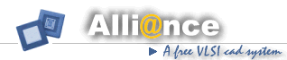

The main steps of the digital design flow
- Behavioral specification
- RTL synthesis
- Place and Route
Overview of the behavioral specification step
- During this step the designer can cut the chip in several functional
blocks interconnected together

- Then he has to describe, using a hardware description langage (HDL),
the behavior of each functional block.
Each functional block can be:
- a Finite State Machine

- a set of registers and transfert functions

- a set of interconnected other functional blocks

- The behavioral description has to be validate. The designer can use
different methods such as:
- digital simulation using a set of stimuli.
(each stimuli describes the value of inputs pins
and the expected values of outputs pins)
- model checking using a set of CTL formulae. (each CTL
formulae describe a property that the functional block has
to verified)
The behavioral specification using the Alliance CAD system
- Digital simulation using a set of stimuli:

- GENPAT is used to write
digital stimuli. It provides a C
interface of a set of functions usefull to create stimuli. It
loads a C file describing patterns and run the C compiler.
Finally it generates a stimuli file
(PAT file format).
Note that patterns file can also
be written using a simple text editor.
- ASIMUT is a VHDL simulator.
It loads behavioral or structural
descriptions written according to the Alliance VHDL subsets.
ASIMUT may also be linked with C
descriptions of behavioral
components.
It loads a stimuli file (PAT file format) and then
run the simulation. The result is dumped in a new pattern file
and it can be displayed using XPAT.
- XPAT is a graphical pattern
viewer. It loads a pattern file
(PAT file format)
and displays waveforms on a graphical window.
- Digital simulation of FSM descriptions:

- SYF loads the graph of a Finite
State Machine. This FSM is
described in VHDL using predefined templates. It encodes each
states of the FSM and tries to minimize the resulting
combinatorial logic.
Finally it drives a new description using the Alliance VHDL
dataflow subset (VBE file format).
- Digital simulation of VHDL descriptions using Synospys VHDL subset:

- VASY can be seen as a VHDL
translator. It loads VHDL
behavioral or structural descriptions (written according to the
Synopsys VHDL subset).
It then drives one or more VHDL descriptions using the Alliance
VHDL dataflow or structural
subsets.
Those Alliance VHDL subsets are small and very
particular.
They are called VBE (VHDL
BEhavioral) and VST (VHDL
STructural) file format.
- Model checking of behavioral descriptions:

- MOCHA loads the graph of a
Finite State Machine
description. This FSM is described in VHDL using predefined
templates. Then it loads a list of CTL formulae (described in
CTL file format) and check formally if the given FSM verify CTL
properties. MOCHA can also be
used on a behavioral description
using the Alliance VHDL dataflow subset (VBE).
- Summary of digital behavioral specification step

Overview of the RTL synthesis step
- This step consist on a transformation of a behavioral description
to an optimized netlist of gates (standard cells, macros-cells, datapaths etc ...).
- The designer can give optimization parameters and constraints to
be satisfied such as:
- delay, arrival/required time
- surface
- power consumption
- etc ...
- The RTL synthesis step has to be validate. The designer can use
different methods such as:
- Post synthesis digital simulation
- Formal proof
The RTL synthesis step using the Alliance CAD system
- Logic synthesis and standard cell mapping

- BOOM is used for the first
step of the synthesis process.
It loads a behavioural description
(VBE), if possible a parameter
file, and it builds an equivalent boolean network.
From one hand it minimizes the boolean expression
of each nodes of the network, and on the other hand it factorizes
equivalent nodes. The result is an equivalent boolean network where
the maximum depth is smaller and where boolean nodes have been factorized.
- ASIMUT is the Alliance's VHDL simulator.
- PROOF is an equivalence
checker. It loads two behavioural descriptions
(VBE) and check their equivalence using formal technics.
- BOOG is used for the second
step of the synthesis process.
It loads a behavioural description
(VBE) beforehand optimized
with BOOM
and builds an equivalent boolean network. It loads also a library of standard
cells and in option a parameter file.
For each boolean function of each node of the network,
it tries to find in the given library, a cell or a set of cells that produce
the same boolean function. This step is often called standard cell mapping.
The result is a netlist of cells with an equivalent behavior.
- LOON is used for the last
step of the synthesis process.
It loads a netlist of gates described in VHDL (VST).
It loads also a library of standard cells and in option a parameter file.
LOON computes the critical path
and performs a gate repowering to
decrease its delay and global capacitance.
The result is an optimized netlist described in VHDL
(VST).
- Handmake synthesis

- GENLIB provides a C
interface of a set of functions usefull to create
a netlist of cells or a physical layout. For example given a cell library,
a simple C function call is enough to create an instance of a cell.
The result is a netlist (or a physical layout) built during the sequential
execution of the C source code.
- XSCH is the graphical
schematic viewer of Alliance. It loads a netlist
(VST file
format) and displays it on a graphical window.
- ASIMUT is the Alliance's VHDL simulator.
- Data-path synthesis

- GENLIB provides also a C
interface for several macro-cells generators such
as rom generator/register file generator etc ...
The layout and the netlist of a complex data-path can be easily
generated with only simple calls to predefined C functions.
- ASIMUT is the Alliance's VHDL simulator.
- FSM synthesis and state graph minimisation:

- FMI loads the graph of a Finite
State Machine (FSM file format).
In the given FSM, FMI finds all
equivalent states and merges them all
together. The result is a new FSM, that still equivalent, but with a
reduced number of states.
Finally it drives this new description using FSM
file format.
- FSP is an FSM equivalence
checker. It loads the graph of two FSMs and checks formally
(using a FSM product based algorithm) if they have exactly the
same behavior.
- SYF is a Finite State Machine synthesizer.
- B2F is a Finite State Machine
abstractor.
It loads a RTL VHDL description (VBE file format).
It then build the graph of an equivalent Finite State Machine, using a symbolic
simulation algorithm. This tool does the inverse operation of the FSM synthesizer
SYF
Overview of the Place & Route step
- This step consist on a transformation of a netlist description
to a physical layout.
- The designer can give some parameters and constraints to
be satisfied such as:
- an initial placement of the cells
- a position for each physical connectors
- a form factor
- number of metal layers to be used
- etc ...
- The place and route step has to be validated. The designer has to use
different methods such as:
- Netlist exctration and netlist comparison
- Design rule checking
- Functionnal abstraction
The place and route step using the Alliance CAD system
- Overcell place and route

- OCP is a placement tool. It
loads a netlist of standard cells.
The designer can specifies eventually connectors placement by given
a parameter file (IOC file format).
If there are non standard cell blocks in the netlist, the designer
has to give a placement for those blocks.
OCP then uses a simulated
annealing algorithm to find a placement
of all the netlist's cells, that minimized the length of nets.
The result is a physical symbolic layout file with physical connectors
and placed cells (AP file format).
- NERO(previously OCR) is the overcell
router of Alliance. It loads a netlist and a
physical placement file. The designer can give other parameters such
as the number of metal layer he would like to use.
The result is a physical symbolic layout view where each net
of the netlist has been routed (AP file format).
- Pad ring place and route

- RING loads a netlist of pads
interconnected with a "core" block.
The designer can give a relative placement for those pads (RIN file format).
After loading the physical view of the pads and the core, RING
place and route them all together, with a special treatment for
the power supply nets.
The result is a physical symbolic layout
(AP file format).
- Place and route validation

- LYNX (called now COUGAR) is a
hierarchical netlist extractor.
It loads a symbolic or real physical view and given a technological
file (RDS file format) it extracts a netlist
(AL file format).
- LVX is simple a netlist comparator.
- DRUC is a hierarchical design rule checker.
It loads a symbolic physical view and given a technological
file (RDS file format) it verifies design rules.
- ASIMUT is the Alliance's VHDL simulator.
- GRAAL is a hierarchical symbolic layout editor.
- Symbolic layout to real layout

- Given a technological file, S2R transforms
a symbolic layout (lambda) to a real equivalent layout (micron).
- DREAL is the real layout editor of Alliance.
- LYNX is the netlist extractor of Alliance.